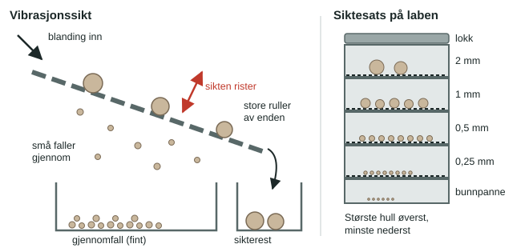

Sikting
Etter knusing og maling har vi en blanding av store og små biter. Med sikting sorterer vi bitene etter størrelse, slik at hvert trinn i prosessen får biter i riktig størrelse.
Slik virker en sikt
En sikt er en flate med mange like store hull. Flaten kan være en duk av ståltråd, en plate med hull eller rader av stenger. Størrelsen på hullene kalles maskevidde.
Når en blanding legges på sikten, faller bitene som er mindre enn hullene, gjennom. De kalles gjennomfall. Bitene som er større, blir liggende igjen på sikten. De kalles sikterest. Slik deler sikten blandingen i to deler, en fin og en grov.
Legger vi flere sikter over hverandre, med de største hullene øverst, kan vi dele blandingen i flere deler. Hver del kalles en fraksjon. Pukk og grus selges for eksempel i fraksjoner som 0–4 mm og 8–16 mm.

Sikter i anlegget
En vibrasjonssikt er den vanligste sikten i industrien. Den består av en skrå siktflate som rister kraftig, drevet av en motor. Ristingen gjør at bitene hopper og hele tiden får nye sjanser til å treffe et hull. Samtidig gjør skråningen at stoffet beveger seg framover. Mange vibrasjonssikter har to eller tre siktflater over hverandre, kalt dekk, og gir like mange fraksjoner pluss gjennomfallet.
En trommelsikt er en roterende trommel med hull i veggen. Den ligger litt på skrå. Stoffet går inn i den øverste enden, og de små bitene faller ut gjennom hullene mens trommelen roterer. De store bitene kommer ut i den andre enden. Trommelsikter brukes blant annet til kompost, avfall og fuktig stoff.
En stangsikt er en grov rist av kraftige stenger. Den står ofte foran grovknuseren. Steiner som allerede er små nok, faller mellom stengene og går forbi knuseren. Da slipper knuseren å bruke tid og energi på dem.
Sikting i en lukket krets
Sikten jobber ofte sammen med en knuser eller en mølle. Det som er for grovt, går tilbake og knuses på nytt, mens det som er fint nok, går videre. Dette kalles en lukket krets, og du kan lese om den på siden Knusing og maling. Hvordan du regner på mengdene i en krets, lærer du på siden Resirkulering og utbytte i Fysiske prinsipper.
Når sikten ikke skiller perfekt
En sikt skiller aldri helt perfekt. Det havner alltid noen fine biter i sikteresten. Grunnene kan være:
- For mye stoff på sikten. Laget blir så tykt at de små bitene ikke når ned til hullene før de er ved enden.
- Fuktig stoff. Fine partikler klumper seg sammen eller kleber seg til de store bitene.
- Tette hull. Biter som er nesten like store som hullene, kan sette seg fast. Da blir det færre åpne hull. Siktduken må rengjøres eller byttes.
- Hull i duken. En slitt eller ødelagt duk slipper store biter gjennom. Da blir gjennomfallet for grovt.
Operatøren følger med på dette ved å ta prøver og sjekke at fraksjonene har riktig størrelse.
Siktanalyse
For å finne ut hvor store bitene i en prøve er, gjør vi en siktanalyse. Vi bruker en siktesats: flere sikter stablet oppå hverandre med de største hullene øverst og en tett bunnpanne nederst. Prøven veies og helles i den øverste sikten. Så ristes satsen, ofte i en rystemaskin. Til slutt veier vi det som ligger igjen på hver sikt.
Oppgave: En prøve på 200,0 g knust stein siktes. Tabellen viser hvor mye som ble liggende på hver sikt. Hvor mange prosent av prøven er finere enn 0,5 mm?
| Sikt (maskevidde) | Masse på sikten | Andel av prøven |
|---|---|---|
| 2 mm | 18,0 g | 9,0 % |
| 1 mm | 64,0 g | 32,0 % |
| 0,5 mm | 72,0 g | 36,0 % |
| 0,25 mm | 34,0 g | 17,0 % |
| bunnpanne | 12,0 g | 6,0 % |
| Sum | 200,0 g | 100,0 % |
Løsning:
- Andelen på hver sikt er massen på sikten delt på massen av hele prøven. For 2 mm-sikten: \( \frac{18{,}0 \text{ g}}{200{,}0 \text{ g}} \cdot 100 \% = 9{,}0 \% \).
- Det som er finere enn 0,5 mm, har falt gjennom 0,5 mm-sikten. Det ligger på 0,25 mm-sikten og i bunnpanna.
- Legg sammen: 17,0 % + 6,0 % = 23,0 %.
Svar: 23,0 % av prøven er finere enn 0,5 mm.
Kontroll: Massene skal til sammen bli omtrent like mye som prøven du startet med. Mangler det mye, har stoff gått tapt, for eksempel som støv.
Hvordan siktanalysen gjøres på laben, og hvordan resultatet rapporteres, hører til Laboratorium og analyse.
- Støv: Sikting av tørt stoff lager støv. Støv fra stein som inneholder kvarts, kan gi alvorlig lungesykdom. Siktene i anlegget er ofte bygd inn og har avsug. Bruk åndedrettsvern når prosedyren krever det.
- Støy og vibrasjoner: Vibrasjonssikter lager mye støy. Bruk hørselvern. Les mer på siden Støy og hørsel.
- Bevegelige deler: Sikten rister og trommelen roterer. Før du rengjør en sikt eller bytter siktduk, skal den stoppes og sikres med lås og merk.
Test deg selv
1. Hva kalles bitene som faller gjennom hullene i sikten?
- Sikterest
- Gjennomfall
- Maskevidde
Bitene som er mindre enn hullene, faller gjennom og kalles gjennomfall. Bitene som blir liggende igjen, kalles sikterest. Maskevidden er størrelsen på hullene.
2. Hvordan er siktene stablet i en siktesats?
- Største hull øverst og minste hull nederst, med bunnpanne under
- Minste hull øverst og største hull nederst
- Det spiller ingen rolle hvilken rekkefølge de står i
Prøven helles i øverst. Hver sikt holder igjen bitene som er for store til å komme videre. Derfor må hullene bli mindre og mindre nedover. Det fineste stoffet havner i bunnpanna.
3. Hvorfor rister en vibrasjonssikt?
- For å knuse bitene mindre
- For at bitene skal få mange sjanser til å treffe et hull, og for å flytte stoffet framover
- For å tørke stoffet
Ristingen får bitene til å hoppe, slik at de små bitene kommer ned til hullene og faller gjennom. Sammen med skråningen flytter ristingen også stoffet bortover sikten.
4. I en siktanalyse av 150 g ble det liggende 30 g på én sikt. Hvor stor andel av prøven er det?
- 5 %
- 15 %
- 20 %
30 g / 150 g · 100 % = 20 %.
5. Gjennomfallet fra en sikt i anlegget er plutselig blitt for grovt. Hva er en sannsynlig årsak?
- Det er for mye stoff på sikten.
- Det har gått hull i siktduken.
- Stoffet er for fuktig.
Er det hull i duken, slipper store biter gjennom, og gjennomfallet blir for grovt. For mye stoff og fuktig stoff gir det motsatte: fine biter blir med i sikteresten.
Ordliste
| Begrep | Forklaring | Engelsk |
|---|---|---|
| sikting | Å sortere faste biter etter størrelse ved å la dem passere en flate med hull. | screening, sieving |
| sikt | En flate med mange like store hull, for eksempel en duk av ståltråd, som skiller små biter fra store. | screen, sieve |
| maskevidde | Størrelsen på hullene i en sikt. | mesh size, aperture |
| gjennomfall | Den delen av stoffet som faller gjennom hullene i sikten, altså de små bitene. | undersize |
| sikterest | Den delen av stoffet som blir liggende igjen på sikten, altså de store bitene. | oversize |
| fraksjon | En del av en blanding der alle bitene er innenfor et bestemt størrelsesområde, for eksempel 8–16 mm. | size fraction |
| vibrasjonssikt | En skrå sikt som rister. Ristingen hjelper de små bitene gjennom hullene og flytter stoffet framover. | vibrating screen |
| trommelsikt | En roterende trommel med hull i veggen. Små biter faller ut gjennom hullene, og store kommer ut i enden. | trommel screen |
| siktanalyse | En måling av hvor store bitene i en prøve er. Prøven ristes gjennom en siktesats, og stoffet på hver sikt veies. | sieve analysis |
Les mer
- Knusing og maling: knuseren som sikten jobber sammen med.
- Resirkulering og utbytte (Fysiske prinsipper): regning på stoff som går i krets.
Om kildene: Teksten, eksemplene og figurene på denne siden er laget for dette nettstedet. Siden bygger på undervisningsopplegg i kjemiprosess- og laboratoriefag ved Sauda vgs, som er utarbeidet med utgangspunkt i blant annet Kjemien stemmer, Laboranten og åpne nettkilder.